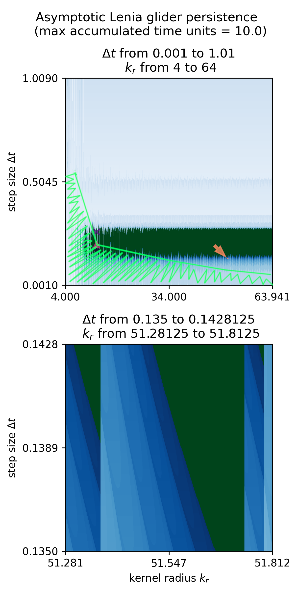

Non-Platonic persistence map for a glider in asymptotic Lenia. Precision increases from top to bottom and left to right as step size decreases and kernel radius increases, respectively. Figure from [1]
When self-organizational persistence is not predictable in advance (sensitive to initial conditions), the persistence boundary is rough at all scales down to floating point error.
Unpredictable outcomes from arbitrary initial conditions: the playful origins of Life on a Go board.
Exploring persistence maps can give us hints about where to move in physical-simulation parameter space to find more or less Platonic behavior.
~5-minute video exploring fractal persistence maps for Lenia, asymptotic Lenia, and adamaton CA: on YouTube
Persistence map for Orbium unicaudatus, a glider in the standard Lenia framework, zooming in on fractal boundaries.
download (mp4)
Fractal persistence map of adorbium, a glider morphologically similar to Orbium (with the same neighborhood kernel), but running under adaptive moment (adam) update. download (mp4)
Fractal persistence map of asymdrop, a glider morphologically similar to Orbium (with the same neighborhood kernel) in asymptotic Lenia with a target function defined by mu = 0.12 and sigma = 0.005.
download (mp4)
[1] Q. Tyrell Davis; July 22–26, 2024. "Non-Platonic Autopoiesis of a Cellular Automaton Glider in Asymptotic Lenia." Proceedings of the ALIFE 2024: Proceedings of the 2024 Artificial Life Conference. ALIFE 2024: Proceedings of the 2024 Artificial Life Conference. Online. (pp. 118). ASME. 6https://doi.org/10.1162/isal_a_00786, arxiv:2407:21086
[2] Ivan Yevenko; July 22–26, 2024. "Classifying the fractal parameter space of the Lenia Orbium." Proceedings of the ALIFE 2024: Proceedings of the 2024 Artificial Life Conference. ALIFE 2024: Proceedings of the 2024 Artificial Life Conference. Online. (pp. 14). ASME. https://doi.org/10.1162/isal_a_00728
Note similarities to the fractal boundaries of neural network trainability. JSD's project was a significant influence on the work above: [3] Sohl-Dickstein, J. N. (2024). The boundary of neural network trainability is fractal. ArXiv, arxiv:2402.06184.